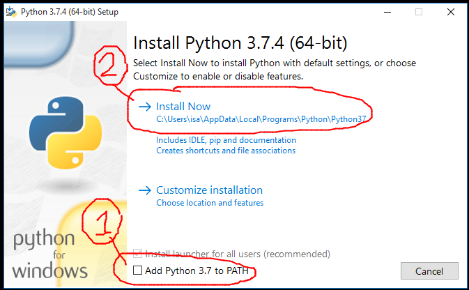
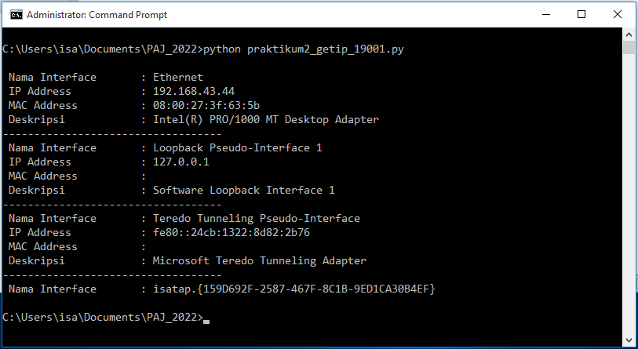
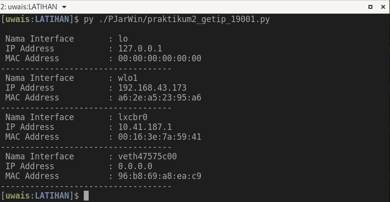

PAJ Pertemuan 03
PERTEMUAN KETIGA 03 - Praktikkum 2 :
| Status | : Online |
| Schedule | : Online |
| Waktu | : 28/03/2022 |
| Tema | : Get Local IP and Interface Name |
-
Kerjakan Tugas Praktikum 2 Dibawah dan kumpul ke Folder
PAJ_NPMdi Google Drive anda, Bagi yang belum memiliki folderPJA_NPMdiGoogle Driveseilahkan baca langkah-langkah yang ada di Pertemuan Pertama ini -
Praktikum 2 ini TEMA yang dibahas adalah tentang code python untuk melihat Informasi yang berhubungan dengan Perangkat jaringan yang ada pada local komputer kita, Informasi yang dapat dilihat seperti IP, Nama Interface, Mac Address dll.
-
Silahkan Lalkukan Praktikum bersama Teman-Teman agar dapat menyelesaikan masalah bersama dan agar anda mudah paham materi praktikumnya.
Install Python dan Module scapy
-
Sebelum Praktikum mandiri pastikan anda sudah siapkan aplikasi python dan modul yang dibutuhkan di laptop atau PC anda
-
Perhatikan LANGKAH-LANGKAH INSTALASI PYTHON dibawah agar python DIKENALI atau dapat BERJALAN di CMD pada laptop/PC anda.
Install Python versi 3.7.4
-
Download File python versi
3.7.4di Download - python-3.7.4-amd64.exe, -
Setelah File Python Terdownload, cari file
python-3.7.4-amd64.exedi FolderDownloadsdan jalankan (Dobel klik/Klik dua kali) untuk dibuka/dijalankan. -
Tampilan Install Python akan terlihat seperti gambar dibawah: 
-
Setelah itu, PERTAMA silahkan BERI CENTANG pada CheckBox
Add Python 3.7 to PATH, selanjutnya KLIK padaInstall Now, selanjutnya tunggu sampai instalasi selesai. -
Jika telah selesai Installasi, Sekarang Python harusnya sudah dapat diakses lewat CMD.
Install Modul Python - scapy
- Install modul python : scapy, untuk install modul anda harus terhubung dengan INTERNET, setelah itu buka CMD dan jalankan perintah berikut :
python -m pip install scapyataupip install scapy, tunggu sampai proses install selesai.
- Jika modul telah selesai diinstall, anda bisa memeriksanya dengan perintah
python -m pip listataupip list, maka CMD akan menampilkan daftar modul yang telah ter-install di local komputer.
Pengganti Pertemuan ke 3
-
Tulis Code dibawah dengan Aplikasi Editor.
-
Simpan dengan Beri nama file dengan
praktikum2_getip_NPM.py(ubah NPM dengan lima digit terakhir npm anda) -
Contoh nama file :
praktikum2_getip_19001.py -
Jalankan di CMD/Terminal, perintahnya : python praktikum2_getip_19001.py
-
Jalankan dan Jika Tidak Ada Error, ambil/buat
ScreenShotdari hasilnya dan beri namapraktikum2_getip_19001.JPGataupraktikum2_getip_19001.PNG. - Jadi total ada 2 (dua) file yang harus di-Upload/Kirim ke
GDrive, yaitu:- File Code :
praktikum2_getip_19001.py - File Screenshot :
praktikum2_getip_19001.PNGataupraktikum2_getip_19001.JPG
- File Code :
-
Silahkan Upload/Kirim 2 (dua) file tersebut ke FOLDER
PAJ_NPManda masing-masing yang di GDRIVE (Google Drive). - Batas Waktu Kumpul sampai sebelum Pertemuan berikutnya masuk.
The CODE
- Jika anda menggunakan Windows, CUKUP tulis/copy code dibawah yang khusus untuk Windows
- Jika ada yang menggunakan LINUX, CUKUP tulis/copy code dibawah yang khusus untuk LINUX
Code Untuk OS Windows
# Gunakan Code ini JIKA OS-nya Windows
# Code/Script praktikum 2
# Tema : Get Local IP and Interface Name
# nama : ??
# npm : 19???
import scapy.all as sc
for l in sc.get_windows_if_list():
try:
print(" {:<20} : {}".format("Nama Interface",l["name"]))
print(" {:<20} : {}".format("IP Address",l["ips"][1]))
print(" {:<20} : {}".format("MAC Address",l["mac"]))
print(" {:<20} : {}".format("Deskripsi",l["description"]))
print("-"*35)
except:
pass
Code Untuk OS LINUX
# Gunakan Code ini JIKA OS-nya LINUX
# Code/Script praktikum 2
# Tema : Get Local IP and Interface Name
# nama : ??
# npm : 19???
import scapy.all as sc
for IFL in sc.get_if_list():
IP_ADDR = sc.get_if_addr(IFL)
MAC_ADDR = sc.get_if_hwaddr(IFL)
print(" {:<20} : {}".format("Nama Interface",IFL))
print(" {:<20} : {}".format("IP Address",IP_ADDR))
print(" {:<20} : {}".format("MAC Address",MAC_ADDR))
print("-"*35)
Screenshot HASIL Code:
-
Berikut merupakan HASIL screenshot dari code diatas pada OS Windows ketika dijalankan di CMD: 
-
Berikut merupakan HASIL screenshot dari code diatas pada OS LINUX ketika dijalankan di Terminal: 
by: ikhwan@fedora.linux